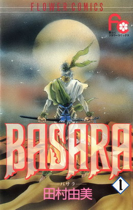

Alternative Name(s):
Author(s): Tamura Yumi
Genres: Action, Adventure, Drama, Fantasy, Gender Bender, Romance, Sci Fi, Shoujo, Tragedy
Release: 1991
Satus: Complete
Type: Manga
Length: 27 Volumes
Read Online @:


More info @:

Notes
Two twins, one male, Tatara, and one female,Sarasa, born under a prophecy that will united all the waring regions of Japan, but it is only ment for one of the twins, the girl. The girl believes that the prophecy was originally for Tatara so when something horrible happens to him she decideds to sacrifice being a woman to give hope to her fellow villagers.